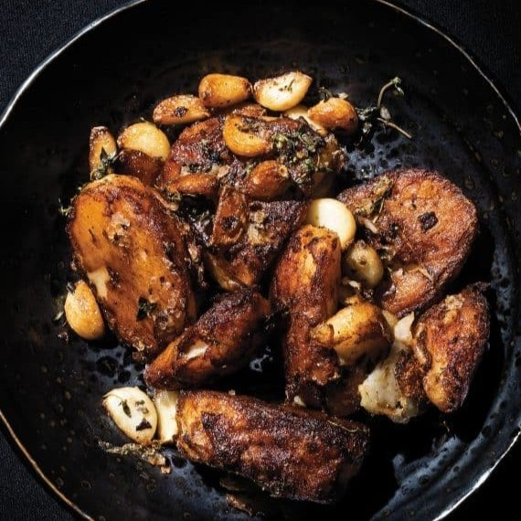

The Bob’s Burgers Burger Book
gives hungry fans their best chance to eat one of Bob Belcher’s beloved specialty Burgers of the Day in seventy-five original,
practical recipes. Now fans can get the ultimate Bob’s Burgers experience at home with seventy-five straight from the show but actually edible
Burgers of the Day. Recipes include the "Bleu is the Warmest Cheese Burger," the "Bruschetta-Bout-It Burger," and the
"Shoot-Out at the OK-ra Corral Burger (comes with Fried Okra)."

Divided into “Opening Acts” (appetizers), “Headliners” (entrees), and “Encores” (desserts), Mosh Potatoes
features 147 recipes that every rock ’n’ roll fan will want to devour—including some super-charged Spicy Turkey Vegetable
Chipotle Chili from Ron Thal of Guns N’ Roses, and others!